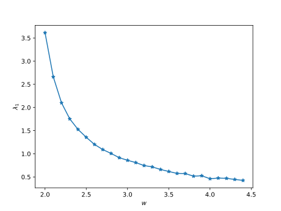
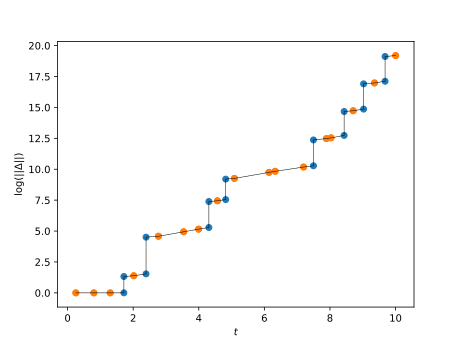

Lyapunov Exponents
The Finite Time Lyapunov Spectrum (FTLS) for a 2D billiard system consists of a set of 4 numbers \lambda_i \, , \{ i = 1, ...,4 \} that characterize how fast the separation of initially close initial conditions grows.
It can be shown theoretically that two of these exponents must be zero (\lambda_2 =\lambda_3 = 0) and the other two are paired in such a way that they sum up to zero, i.e. \lambda_1 = -\lambda_4).
The function provided to calculate the FTLS is
#
DynamicalBilliards.lyapunovspectrum — Function.
lyapunovspectrum([p::AbstractParticle,] bd::Billiard, t)
Returns the finite time lyapunov exponents (averaged over time t) for a given particle in a billiard table.
Returns zeros for pinned particles.
If a particle is not given, a random one is picked through randominside. See parallelize for a parallelized version.
Here its basic use is illustrated
using DynamicalBilliards radius = 1.0 l = 2.0 bd = Billiard(billiard_polygon(6, l; setting = "periodic")..., Disk([0., 0.], radius)) par = randominside(bd) t = 1000.0 exps = lyapunovspectrum(par, bd, t)
4-element Array{Float64,1}:
0.6814592706812878
1.7107844187885887e-6
-0.0028328980146855327
-0.6786280834510213
In the following example we compute the change of \lambda_1\ versus the distance between the disks in a hexagonal periodic billiard.
using DynamicalBilliards using PyPlot t = 5000.0 radius = 1.0 spaces = 2.0:0.1:4.4 #Distances between adjacent disks lyap_time = zero(spaces) #Array where the exponents will be stored for (i, space) in enumerate(spaces) bd = billiard_polygon(6, space/(sqrt(3)); setting = "periodic") disc = Disk([0., 0.], radius) billiard = Billiard(bd.obstacles..., disc) p = randominside(billiard) lyap_time[i] = lyapunovspectrum(p, billiard, t)[1] end figure() plot(spaces, lyap_time, "*-") xlabel("\$w\$"); ylabel("\$\\lambda_1\$")

The plot of the maximum exponent can be compared with the results reported by Gaspard et. al (see figure 7), showing that using just t = 5000.0 is already enough of a statistical averaging.
Perturbation Growth
To be able to inspect the dynamics of perturbation growth in more detail, we also provide the following function:
#
DynamicalBilliards.perturbationgrowth — Function.
perturbationgrowth(p, bd, t)
Calculates the evolution of the perturbation vector Δ along the trajectory of p. Δ is initialised with [1,0,0,0]. Immediately before and after every collison, this function computes
- the current time.
- the current value of Δ
- the obstacle index of the current obstacle
and returns these in three vectors.
Returns empty lists for pinned particles.
If a particle is not given, a random one is picked through randominside.
For example, lets plot the evolution of the perturbation growth using different colors for collisions with walls and disks in the Sinai billiard:
using DynamicalBilliards, PyPlot, LinearAlgebra bd = billiard_sinai() t, Δ, i = perturbationgrowth(randominside(bd), bd, 10.0) figure() plot(t, log.(norm.(Δ)), "k-", lw = 0.5) scatter(t, log.(norm.(Δ)), c = [j == 1 ? "C0" : "C1" for j in i]) xlabel("\$t\$"); ylabel("\$\\log(||\\Delta ||)\$")
